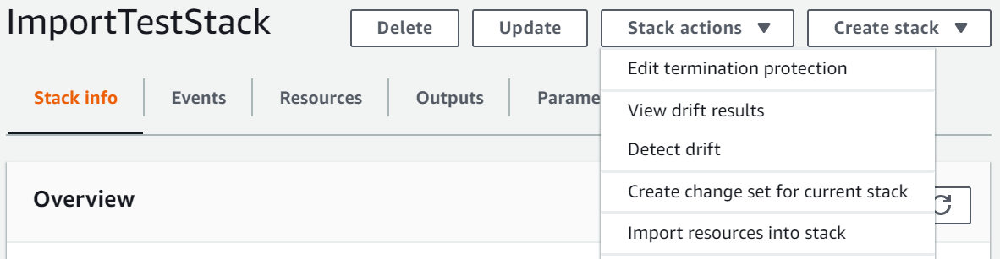

기존 스택 중첩
resource import 기능을 사용하여 기존 스택을 다른 기존 스택에 중첩합니다. 중첩된 스택은 다른 템플릿 내에서 선언하고 참조하는 공통 구성 요소입니다. 따라서 동일한 구성을 복사하여 템플릿에 붙여 넣을 필요가 없고 스택 업데이트를 간소화할 수 있습니다. 공통 구성 요소에 대한 템플릿이 있는 경우 AWS::CloudFormation::Stack 리소스를 사용하여 다른 템플릿 내에서 이 템플릿을 참조할 수 있습니다. 중첩된 스택에 대한 자세한 내용은 중첩 스택 작업 단원을 참조하십시오.
AWS CloudFormation는 resource import를 사용하여 한 수준의 중첩만 지원합니다. 즉, 스택을 하위 스택으로 가져오거나 하위 요소가 있는 스택을 가져올 수 없습니다.
중첩 스택 가져오기 확인
중첩 스택 가져오기 작업 중에 AWS CloudFormation에서는 다음과 같은 유효성 검사를 수행합니다.
-
상위 스택 템플릿의 중첩
AWS::CloudFormation::Stack정의는 실제 중첩 스택의 템플릿과 일치합니다. -
상위 스택 템플릿의 중첩
AWS::CloudFormation::Stack정의에 대한 태그는 실제 중첩 스택 리소스의 태그와 일치합니다.
AWS Management Console을 사용하여 기존 스택 중첩
-
RetainDeletionPolicy를 사용하여 상위 스택 템플릿에AWS::CloudFormation::Stack리소스를 추가합니다. 다음 예제 상위 템플릿에서NestedStack은 가져오기 작업의 대상입니다.JSON
{ "AWSTemplateFormatVersion" : "2010-09-09", "Resources" : { "ServiceTable":{ "Type":"AWS::DynamoDB::Table", "Properties":{ "TableName":"Service", "AttributeDefinitions":[ { "AttributeName":"key", "AttributeType":"S" } ], "KeySchema":[ { "AttributeName":"key", "KeyType":"HASH" } ], "ProvisionedThroughput":{ "ReadCapacityUnits":5, "WriteCapacityUnits":1 } } }, "NestedStack" : { "Type" : "AWS::CloudFormation::Stack", "DeletionPolicy": "Retain", "Properties" : { "TemplateURL" : "https://s3.amazonaws.com/cloudformation-templates-us-east-2/EC2ChooseAMI.template", "Parameters" : { "InstanceType" : "t1.micro", "KeyName" : "mykey" } } } } }YAML
AWSTemplateFormatVersion: 2010-09-09 Resources: ServiceTable: Type: 'AWS::DynamoDB::Table' Properties: TableName: Service AttributeDefinitions: - AttributeName: key AttributeType: S KeySchema: - AttributeName: key KeyType: HASH ProvisionedThroughput: ReadCapacityUnits: 5 WriteCapacityUnits: 1 NestedStack: Type: 'AWS::CloudFormation::Stack' DeletionPolicy: Retain Properties: TemplateURL: >- https://s3.amazonaws.com/cloudformation-templates-us-east-2/EC2ChooseAMI.template Parameters: InstanceType: t1.micro KeyName: mykey -
AWS CloudFormation 콘솔을 엽니다.
-
스택 페이지에서 상위 스택을 선택한 상태에서 Stack actions(스택 작업)를 선택한 다음 Import resources into stack(스택으로 리소스 가져오기)을 선택합니다.
 -
이 작업 중에 제공해야 하는 항목 목록은 Import overview(가져오기 개요) 페이지를 참조하십시오. 그리고 다음(Next)을 선택합니다.
-
Specify template(템플릿 지정) 페이지에서 다음 방법 중 하나를 사용하여 업데이트된 템플릿을 제공하고 다음을 선택합니다.
-
Amazon S3 URL을 선택한 다음, 텍스트 상자에 템플릿의 URL을 지정합니다.
-
템플릿 파일 업로드를 선택한 다음 템플릿을 찾습니다.
-
-
Identify resources(리소스 식별) 페이지에서
AWS::CloudFormation::Stack리소스를 식별합니다.-
Identifier property(식별자 속성)에서 리소스 식별자의 유형을 선택합니다. 예를 들어
AWS::CloudFormation::Stack리소스는StackId속성을 사용하여 식별할 수 있습니다. -
Identifier value(식별자 값)에서 실제 속성 값을 입력합니다. 예:
arn:aws:cloudformation:us-west-2:12345678910:stack/mystack/5b918d10-cd98-11ea-90d5-0a9cd3354c10
-
다음(Next)을 선택합니다.
-
-
Specify stack details(스택 세부 정보 지정) 페이지에서 어떤 파라미터든 수정하고 다음을 선택합니다. 이렇게 하면 변경 세트가 자동으로 생성됩니다.
중요
생성, 업데이트 또는 삭제 작업을 시작하는 기존 파라미터를 수정하면 가져오기 작업이 실패합니다.
-
Review
stack-name(stack-name 검토) 페이지에서 올바른 리소스를 가져오고 있는지 확인한 다음 Import resources(리소스 가져오기)를 선택합니다. 이렇게 하면 마지막 단계에서 생성된 변경 세트가 자동으로 실행됩니다. 이때 어떤 스택 레벨 태그든 가져온 리소스에 적용됩니다. -
상위 스택에 대한 Stack details(스택 세부 정보) 페이지의 Events(이벤트) 창이 표시됩니다.

참고
AWS::CloudFormation::Stack리소스가 이미 AWS CloudFormation에서 관리되기 때문에 이러한 가져오기 작업을 수행한 후에 상위 스택에서 드리프트 감지를 실행할 필요가 없습니다.
AWS CLI을 사용하여 기존 스택 중첩
-
RetainDeletionPolicy를 사용하여 상위 스택 템플릿에AWS::CloudFormation::Stack리소스를 추가합니다. 다음 예제 상위 템플릿에서NestedStack은 가져오기 작업의 대상입니다.JSON
{ "AWSTemplateFormatVersion" : "2010-09-09", "Resources" : { "ServiceTable":{ "Type":"AWS::DynamoDB::Table", "Properties":{ "TableName":"Service", "AttributeDefinitions":[ { "AttributeName":"key", "AttributeType":"S" } ], "KeySchema":[ { "AttributeName":"key", "KeyType":"HASH" } ], "ProvisionedThroughput":{ "ReadCapacityUnits":5, "WriteCapacityUnits":1 } } }, "NestedStack" : { "Type" : "AWS::CloudFormation::Stack", "DeletionPolicy": "Retain", "Properties" : { "TemplateURL" : "https://s3.amazonaws.com/cloudformation-templates-us-east-2/EC2ChooseAMI.template", "Parameters" : { "InstanceType" : "t1.micro", "KeyName" : "mykey" } } } } }YAML
AWSTemplateFormatVersion: 2010-09-09 Resources: ServiceTable: Type: 'AWS::DynamoDB::Table' Properties: TableName: Service AttributeDefinitions: - AttributeName: key AttributeType: S KeySchema: - AttributeName: key KeyType: HASH ProvisionedThroughput: ReadCapacityUnits: 5 WriteCapacityUnits: 1 NestedStack: Type: 'AWS::CloudFormation::Stack' DeletionPolicy: Retain Properties: TemplateURL: >- https://s3.amazonaws.com/cloudformation-templates-us-east-2/EC2ChooseAMI.template Parameters: InstanceType: t1.micro KeyName: mykey -
다음 파라미터를 사용하여
IMPORT유형의 변경 세트를 생성합니다.--resources-to-import는 인라인 YAML을 지원하지 않습니다.>aws cloudformation create-change-set --stack-nameTargetParentStack--change-set-nameImportChangeSet--change-set-typeIMPORT--resources-to-import "[{\"ResourceType\":\AWS::CloudFormation::Stack\",\"LogicalResourceId\":\"MyStack\",\"ResourceIdentifier\":{\"StackId\":\"arn:aws:cloudformation:us-east-2:123456789012:stack/mystack-mynestedstack-sggfrhxhum7w/f449b250-b969-11e0-a185-5081d0136786\"}}] --template-bodyfile://templateToImport.json또한 AWS CLI는 다음 예제와 같이
resources-to-import에 파라미터에 대한 입력으로 텍스트 파일을 지원합니다.--resources-to-import:file://resourcesToImport.txt이 연습에서
file://resourcesToImport.txt에는 다음 내용이 포함되어 있습니다.JSON
[ { "ResourceType":"AWS::CloudFormation::Stack", "LogicalResourceId":"MyStack", "ResourceIdentifier": { "StackId":"arn:aws:cloudformation:us-east-2:123456789012:stack/mystack-mynestedstack-sggfrhxhum7w/f449b250-b969-11e0-a185-5081d0136786" } } ]YAML
ResourceType: 'AWS::CloudFormation::Stack' LogicalResourceId: MyStack ResourceIdentifier: StackId: >- arn:aws:cloudformation:us-east-2:123456789012:stack/mystack-mynestedstack-sggfrhxhum7w/f449b250-b969-11e0-a185-5081d0136786 -
변경 세트를 검토하여 올바른 리소스를 가져오고 있는지 확인합니다.
>aws cloudformation describe-change-set --change-set-nameImportChangeSet -
변경 세트를 실행하여 해당 스택을 소스 상위 스택으로 가져옵니다. 이때 어떤 스택 레벨 태그든 가져온 리소스에 적용됩니다. 가져오기 작업
(IMPORT_COMPLETE)이 성공적으로 완료되면 스택이 성공적으로 중첩됩니다.>aws cloudformation execute-change-set --change-set-nameImportChangeSet참고
AWS::CloudFormation::Stack리소스가 이미 AWS CloudFormation에서 관리되기 때문에 이러한 가져오기 작업을 수행한 후에 상위 스택에서 드리프트 감지를 실행할 필요가 없습니다.